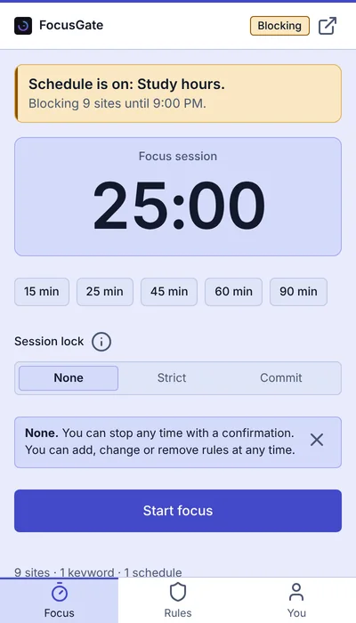
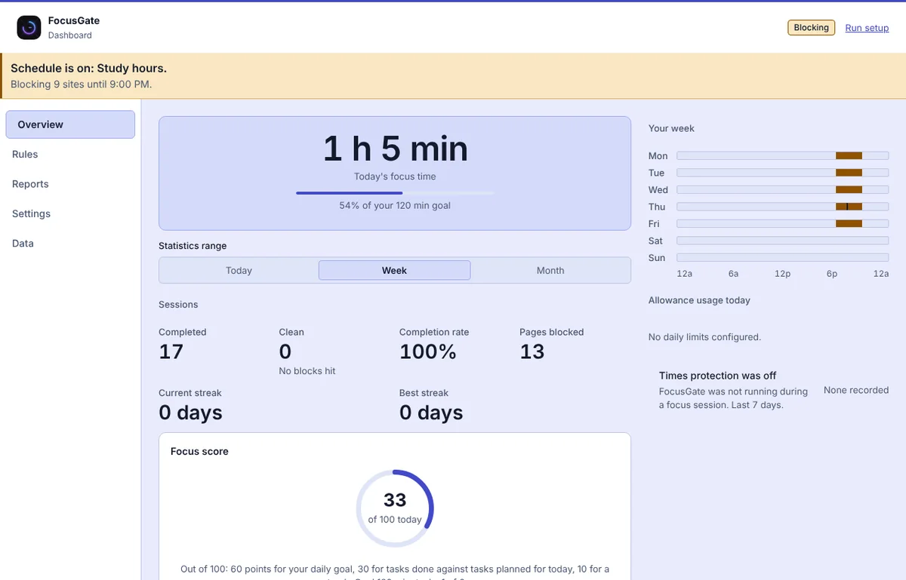
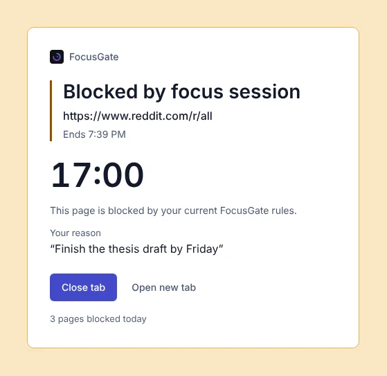

Block distractions. Keep your focus.
FocusGate is a free, open-source website blocker and focus timer for Chrome, Edge and Firefox. It blocks the sites and keywords you choose during focus sessions, on schedules or all day, and your data never leaves your browser.
Not on the Chrome Web Store. Chrome installs from GitHub in about a minute: see the steps.


Get FocusGate for your browser
Pick your browser. Firefox and Edge install from their official add-on stores and update themselves. Chrome installs from the GitHub release.
Firefox
Firefox 140 or later, and Firefox for Android 142 or later. Installs from Firefox Add-ons.
Add to FirefoxChrome
Chrome 116 or later. Download focusgate-chrome.zip from GitHub, extract it and load it in chrome://extensions.
Everything you need to stay on task
Block what pulls you away, focus on purpose, and see how much focused time you really get.
Block websites
A focus list for sessions and schedules, plus an always-blocked list that works all day. Related addresses such as x.com and twitter.com share one entry.
Block keywords
Stop searches and pages that match your words, or hide matches on supported pages such as YouTube and Google Search.
Schedules
Work hours, study time or sleep, on any days and any hours, including overnight. Start from a template and see your whole week at a glance.
Daily limits
Give a site a time or page-open budget. When it runs out, the site blocks.
Focus timer
Start in one click from the side panel. Choose a lock: None, Strict or Commit, to keep your future self honest.
Block now No early stop
Pick sites and an end time, from 5 minutes to 30 days. It never uses your password, and nothing can be loosened until it ends.
See your focus at a glance
The dashboard shows today first, a week chart, your schedules and limits, and when protection was off. Reports, streaks, habits and achievements sit alongside.
- Today, week and month views
- Focus score, streaks and pages blocked
- Only finished sessions count toward your daily goal

A block page that remembers why
When you hit a blocked site you see your own reason, how long is left and a Close tab button. No lecture, no stock message.
- Shows which schedule or session blocked the site
- Says when the block ends
- Light and dark, easy on the eyes

FocusGate at a glance
The facts, in one place.
- What it is
- A browser extension that blocks websites and keywords and runs a focus timer
- Price
- Free. No ads and no account
- Licence
- MIT, open source
- Publisher
- TBTechs
- Current version
- 1.0.2
- Browsers
- Chrome 116+, Microsoft Edge, Firefox 140+ (Firefox for Android 142+)
- Where to get it
- Firefox Add-ons, Microsoft Edge Add-ons, and GitHub Releases for Chrome
- Your data
- Stored in your browser. No server, no analytics, nothing sent anywhere
- Shortcuts
- Alt+Shift+F starts or stops a focus session; Alt+Shift+B blocks the current site
Private by design
No account, no ads, no analytics and no remote servers. Your rules, history and settings live in your browser, and you can export or import a backup. FocusGate keeps only a scrambled copy of your password.
FocusGate needs access to the sites you browse so it can block them. It reads page addresses only to apply your rules.
A lock slows you down; it does not make removal impossible. Someone with access to your browser can still disable the extension.
Content filters are Beta and off by default, because they depend on each site's page layout.
Common questions
What is FocusGate?
FocusGate is a free, open-source website blocker and focus timer for Chrome, Edge and Firefox. It blocks the sites and keywords you choose during focus sessions, on schedules or all day, lets you set daily limits, and shows how much focused time you really get.
Is FocusGate free?
Yes. FocusGate is free and open source under the MIT licence. It has no ads and no account.
Is FocusGate on the Chrome Web Store?
No. FocusGate is not on the Chrome Web Store. On Chrome you install it from the GitHub release in about a minute: download focusgate-chrome.zip, extract it, and load it with Load unpacked. The step-by-step Chrome guide has the details. On Firefox and Edge you install it from their official add-on stores.
How do I install FocusGate on Firefox or Edge?
Open the Firefox Add-ons page or the Microsoft Edge Add-ons page and choose to add it. The store updates it for you.
Does FocusGate collect or send my data?
No. Your rules, history and settings are stored in your browser. FocusGate has no server, no analytics and no ads, and it does not upload page contents or your browsing. The Firefox build declares that it collects no data. You can read the privacy policy or the source code to check.
Ready to focus?
Add FocusGate in a minute. It's free.